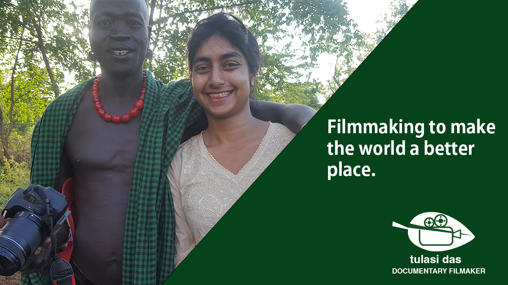

Visual Design
This is my Visual Design assignment, where I have created a prototype for my friend's portfolio. She's a documentary filmmaker, and alongside the three concepts, I also made some digital images, a logo, and a GIF. Please see below for everything you'll need.
(Click on the images in question to bring them up in full size)
Prototypes
For Tulasi's portfolio, I designed three pages; the homepage on a desktop, the homepage in mobile view, and a portfolio page on a desktop.
1. Homepage for Desktop
2. Homepage for Mobile
3. Portfolio page for Desktop
Digital images
I created a number of digital images, including some composites, a few edited images, and a logo. Here, I will also show the original images, so you can see the difference.
1. Hero image for the Portfolio page
2. Composite image, designed to be some kind of marketing material
3. Another marketing graphic
Original image:

4. A retouched image of my friend, used in the prototype
Original image:
5. Another retouched image, also used in the prototype
Original image:
6. A logo I created for her documentary filmmaking portfolio
GIF
Here's a GIF. It's... energetic. Made in Adobe AfterEffects.
How did I do all this?
Great question. Please see below for my Visual Design report.